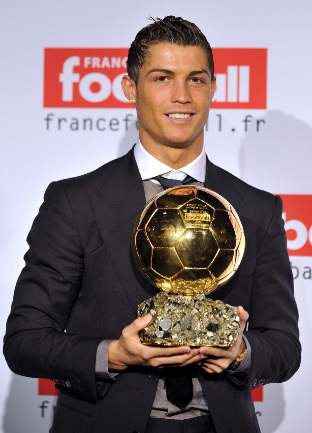
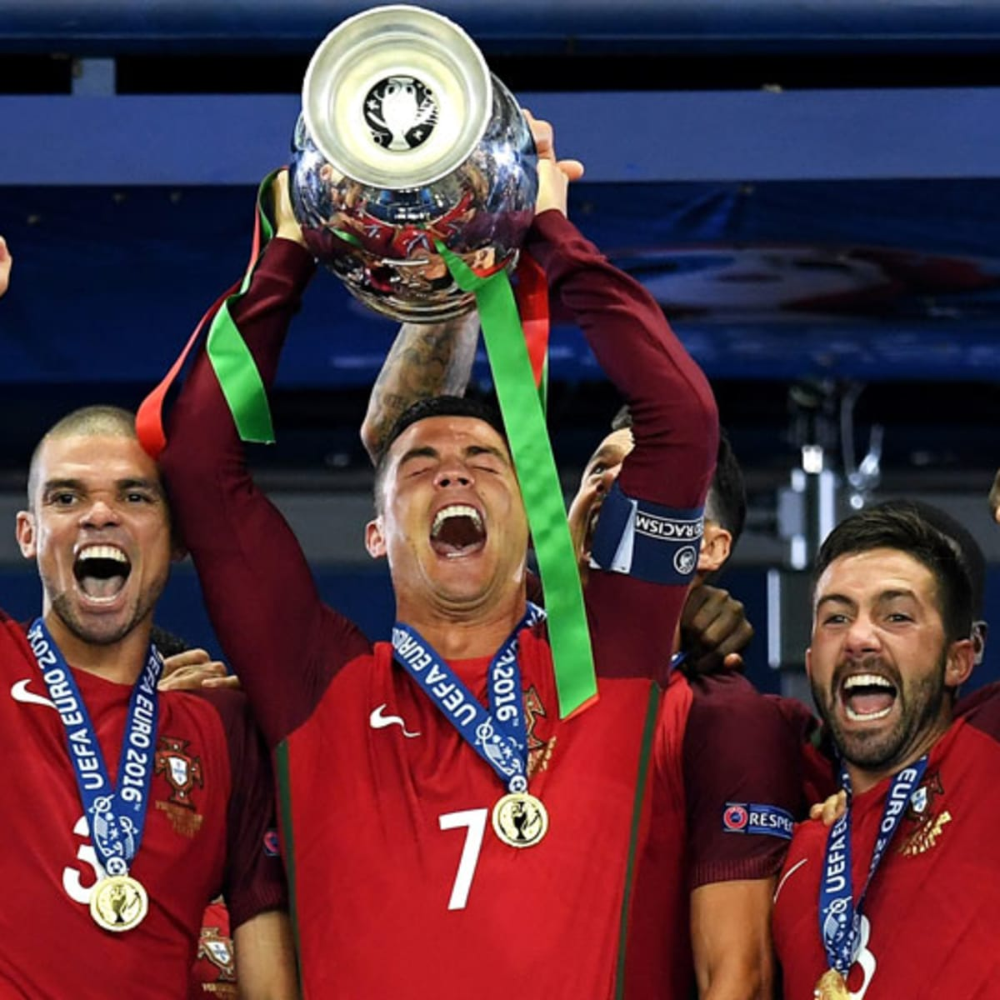

flowchart LR
A[Hard edge] --> B(Round edge)
B --> C{Decision}
simple_quarto_website
This is the story of Cristiano Ronaldo, the greatest footballer ever
link to bio of Ronaldo https://en.wikipedia.org/wiki/Cristiano_Ronaldo.
Cristiano Ronaldo dos Santos Aveiro GOIH ComM; born 5 February 1985 is a Portuguese professional footballer who plays as a forward for and captains both Saudi Pro League club Al Nassr and the Portugal national team. Widely regarded as one of the greatest players of all time, Ronaldo has won five Ballon d’Or awards,[note 3] a record three UEFA Best Player in Europe, and four European Golden Shoes, the most by a European player. He has won 33 trophies in his career, including seven league titles, five UEFA Champions Leagues, the UEFA European Championship and the UEFA Nations League. Ronaldo holds the records for most appearances (183), goals (140) and assists (42) in the Champions League, goals in the European Championship (14), international goals (123) and international appearances (200). He is one of the few players to have made over 1,100 professional career appearances, and has scored over 800 official senior career goals for club and country, making him the highest goalscorer of all time.
Accolades:
| Left Column | Right Column |
|---|---|
| Record Goals | Most UCL Assists |
| Most Champions League Trophies | Most Int’ Caps |
| Most followed on social media | 5 Ballon D’or |
| Most games won | 2008 Treble |
- Ronaldo has the most weak foot goals and headed goals in history
- He has the most game tying / winning goals in football history
- He is the only player in history to win the PFA player of the year and young player of the year in the same season
Stats Per Team
| Team and Years | Appearances and Goals |
|---|---|
| Sporting CP, 2002-03 | 31 apps, 5 goals |
| Man United, 2003-09 | 292 apps, 118 goals |
| Real Madrid, 2009-18 | 438 apps, 450 goals |
| Juventus, 2018-22 | 134 apps, 101 goals |
| Man United, 2021-23 | 54 apps, 27 goals |
| Al Nassr, 2023-24 | 30 apps, 26 goals |
Ronaldo is widely regarded as one of the two best players of his generation, alongside Lionel Messi. Winning his first Ballon d’Or in 2008 by a record-high vote count at age 23, over the next decade Ronaldo has often featured in debates concerning who is the greatest player in history. Acclaimed for his prolific and consistent goal-scoring, he is considered a decisive player who is also a game changer, especially in important and high-pressured situations1.
Arugably the greatest manager ever on the Ronaldo-Messi debate
“People say who is the best player in the world? And plenty of people quite rightly say Messi - you can’t dispute that opinion, but Ronaldo could play for Millwall, Queens Park Rangers, Doncaster Rovers… anyone, and score a hat-trick in a game. I’m not sure Messi could do it. Ronaldo’s got two feet, he’s quick, great in the air, he’s brave - Messi’s brave, of course. I think Messi’s a Barcelona player.”


Ronaldo’s Top-10 Champions League Goals
Here are the columns
On 10 September 2019, Ronaldo scored four goals in a 5–1 away win over Lithuania in a Euro 2020 qualifying match; in the process, he overtook Robbie Keane (23 goals) as the player with most goals in the UEFA European Championship qualifying, setting a new record with 25 goals. He also set a new record for scoring against the most national teams, 40, while also completing his eighth international hat-trick. On 14 October, he scored his 700th senior career goal for club and country from the penalty spot, in his 974th senior career appearance, a 2–1 away loss to Ukraine in a Euro 2020 qualifier. On 17 November, Ronaldo scored his 99th international goal in a 2–0 win over Luxembourg, leading Portugal to qualify for Euro 2020. On 8 September 2020, Ronaldo scored his 100th and 101st international goals in a 2–0 away win over Sweden in a 2020–21 UEFA Nations League match, becoming only the second male player ever to achieve this milestone (after Ali Daei of Iran) and the first in Europe. On 13 October, the FPF announced that Ronaldo tested positive for COVID-19 while being asymptomatic. By 30 October, Ronaldo had recovered.
On 1 September, Ronaldo scored two headed goals, with his second coming seconds before the full-time whistle, in a 2–1 home win against the Republic of Ireland in a World Cup qualifier at the Estádio Algarve, which saw him pass Ali Daei to become the sole record holder by breaking the men’s international scoring record with his 110th and 111th international goals. On 9 October, he scored the opening goal in a 3–0 friendly win over Qatar at the Estádio Algarve; with his 181st international appearance, he also overtook Sergio Ramos’s record for the most international caps received by a European player. In the following match against Luxembourg on 12 October, also played at the Estádio Algarve, Ronaldo scored a hat-trick in a 5–0 win for Portugal, and became the first player to score 10 hat-tricks in men’s international football.
Rest of the assignments requirements
Inline equation: \(E=mc^2\).
\[ F(x) = \int_{a}^{b} f(x) \, dx \]
Here is the citation Ekblom (1986)
References
Ekblom, Björn. 1986. “Applied Physiology of Soccer.” Sports Medicine 3: 50–60.
Footnotes
Ronaldo has the most game winning goals in history↩︎